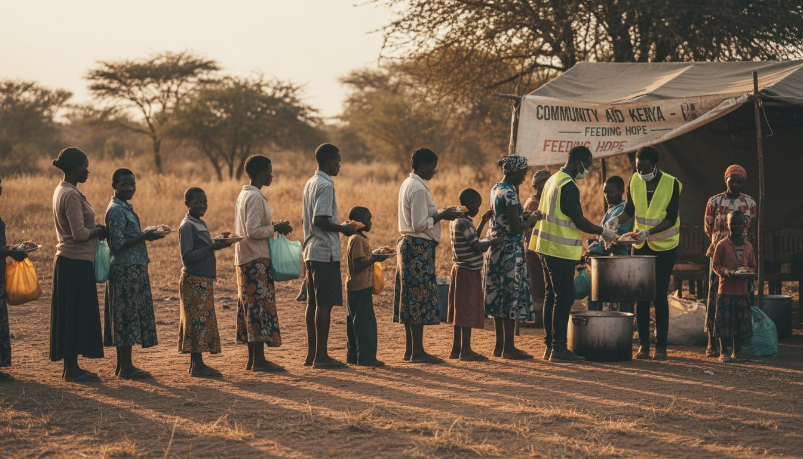
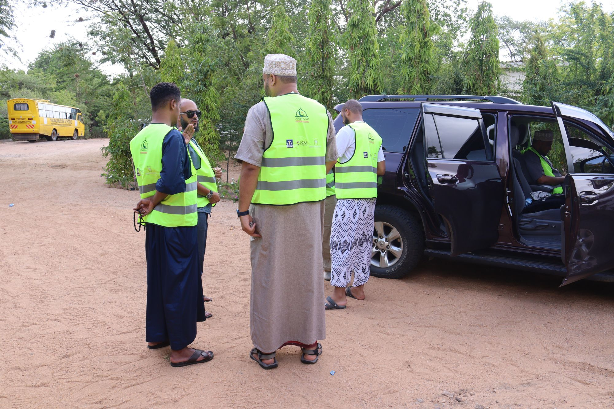
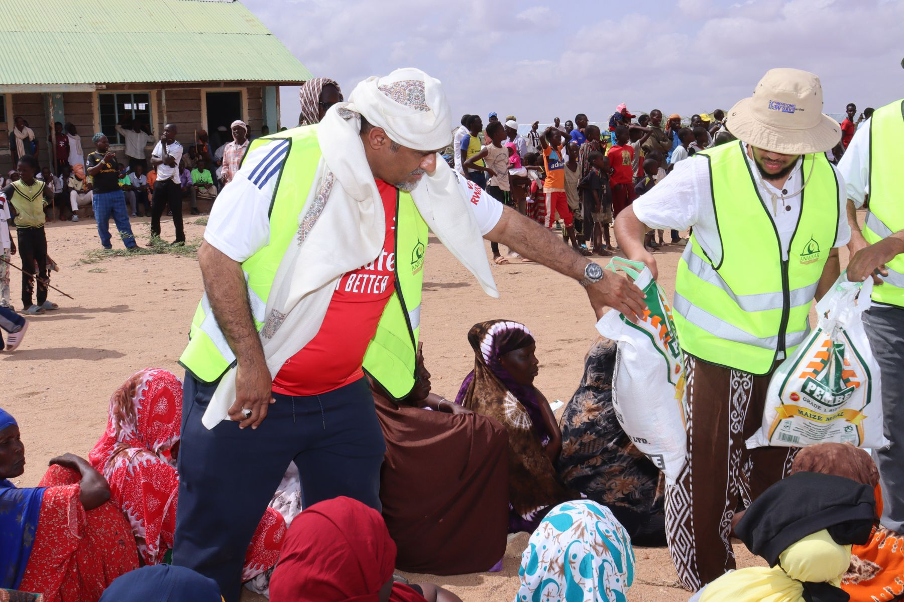
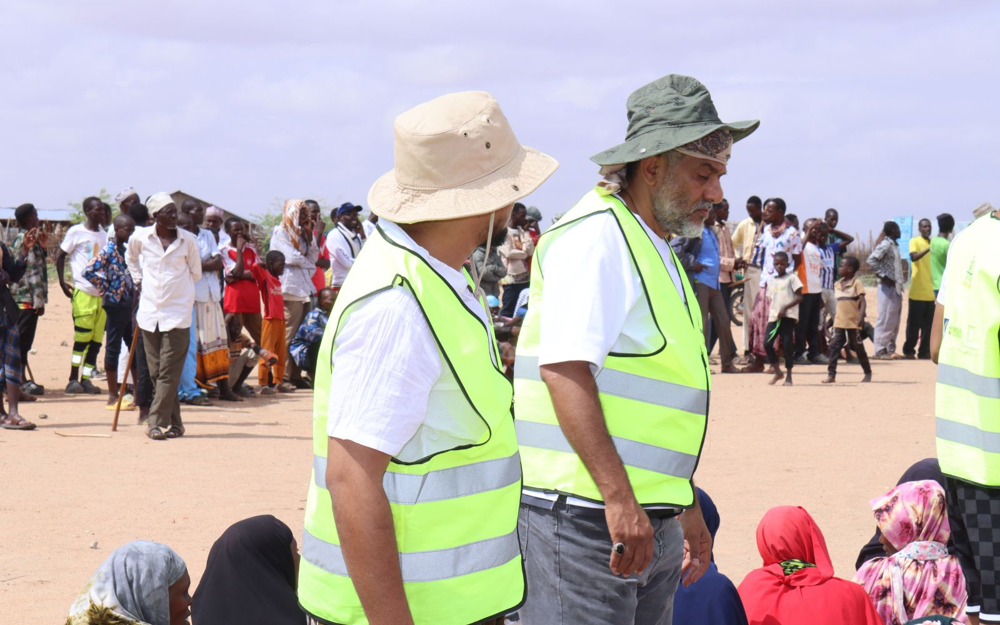
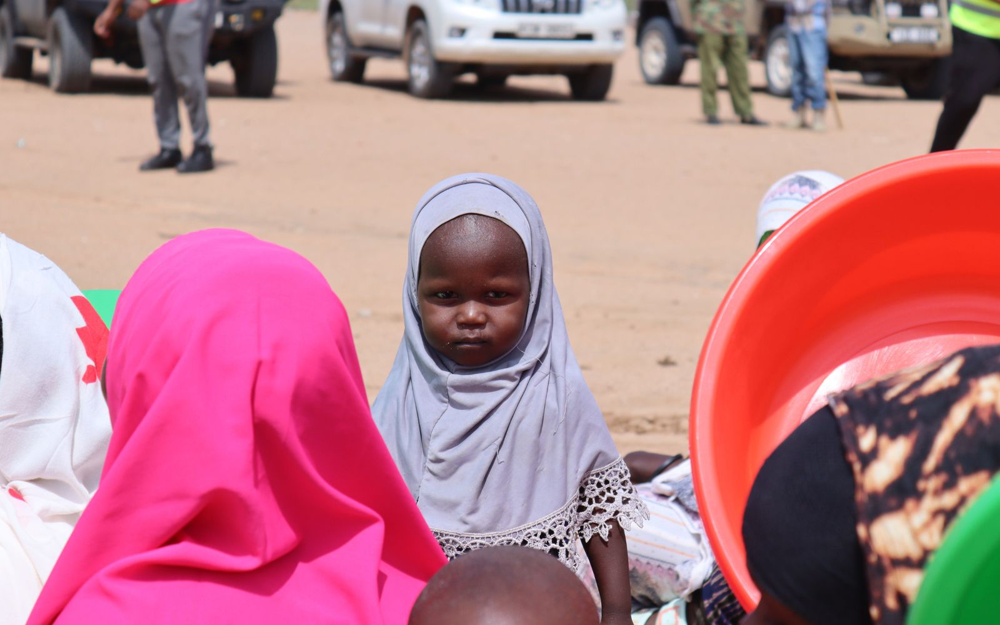
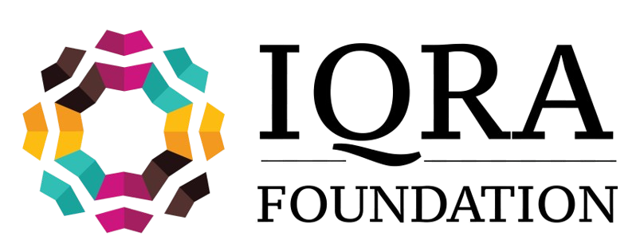
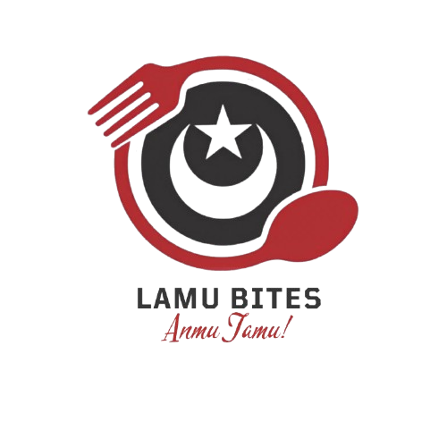
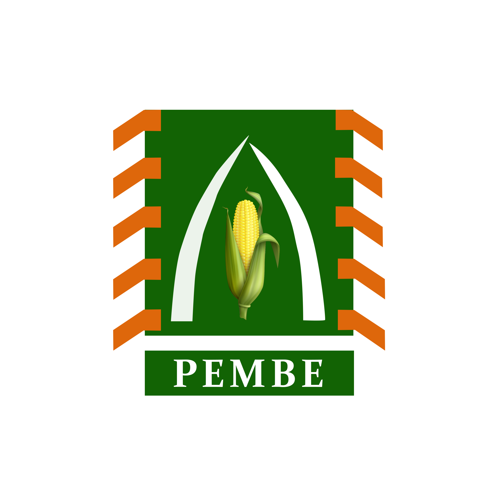
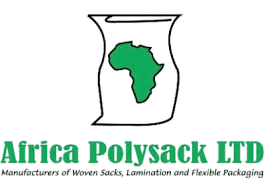

3,000-3,500
Ramadhan Meals Served

Home / About

Founded in 2021, Anwaar Foundation is a Kenyan nonprofit focused on food security, social welfare, and livelihood empowerment for vulnerable communities.
We prioritize practical support in Nairobi and Tana River through community-led coordination, trusted volunteers, and transparent delivery.
Ramadhan Meals Served
Eid Program Reach
Dry Food Reach
Livelihood Households
Our mission is to empower vulnerable communities through hunger alleviation, social support, and sustainable livelihood pathways.
Direct and dignified support for widows, orphans, and households facing hardship.
Regular meal and dry-food interventions during Ramadhan, Eid, and emergency seasons.
Skills and small-enterprise support that help families build long-term independence.
Our teams coordinate outreach, verify needs, and ensure program support reaches the right households.

Field Coordinators & Outreach Team
Anwaar volunteers work with local leaders to map vulnerable households, coordinate distributions, and maintain accountable records for each intervention cycle.
We run recurring campaigns that combine immediate relief with dignified community engagement.

Daily iftar distribution serving vulnerable households during the fasting month.

Festive meal and meat distribution to ensure families celebrate with dignity.
We collaborate with organizations and local networks that share our commitment to dignity, transparency, and community empowerment.

Iqra Foundation
Lamu Bites Restaurant
Pembe
Africa Polysack LtdJoin our mission through donations, partnerships, or volunteer support to reach more vulnerable families across Kenya.